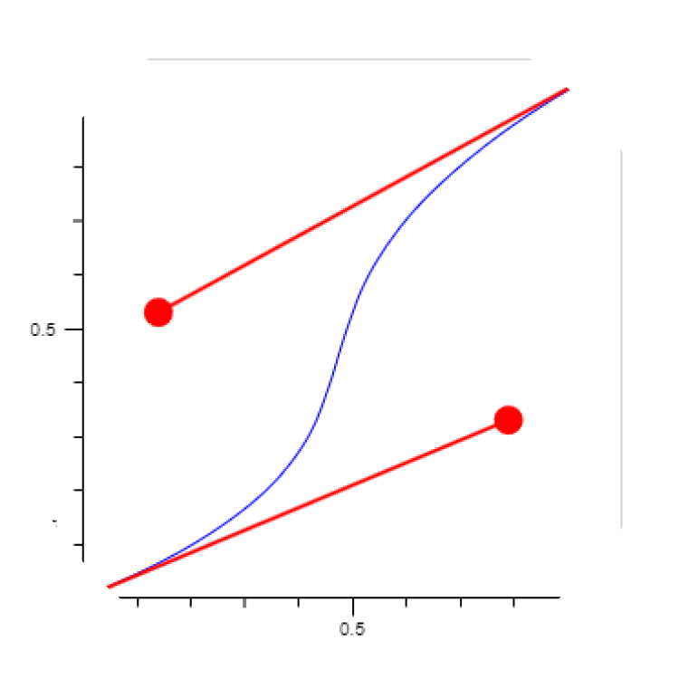
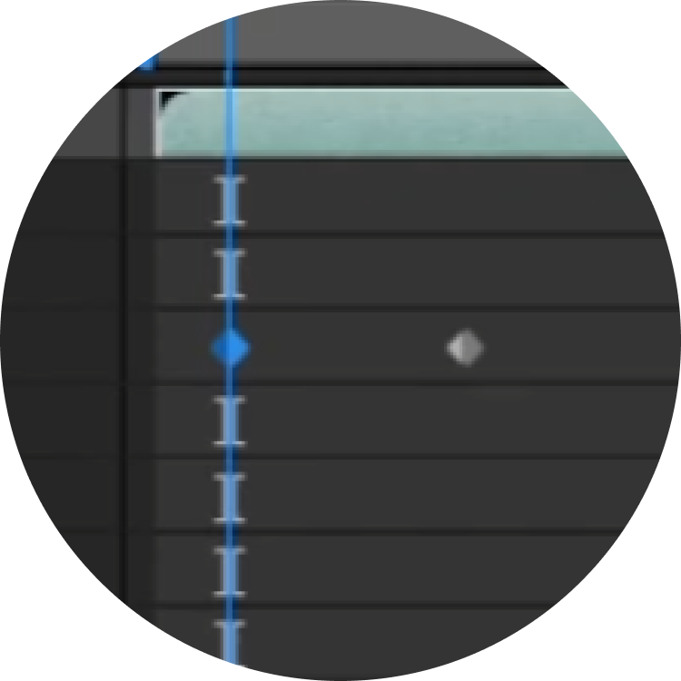
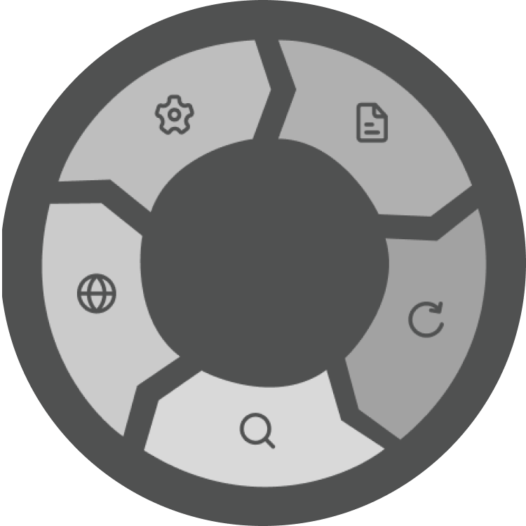

About
I am a multidisciplined and selectively skilled developer - working through deep problem solving to create modern, impactful designs.
Skills

UI/UX Development
Through concept, to wireframes, and to a fully functional, responsive website.

Motion Graphics
Using modern practices to create designs that breathe a life of their own.

Video Production
Editing since childhood, my videos bring storytelling and advertising to the next level.

Agile/Dev-Ops
Organizing and iterating through methodologies for secure outcomes fit of purpose.
Experience
From embedded systems and FPGA builds to motion design for real communities and clients, I turn ideas into working outcomes.
Works
Autonomous Navigation in Embedded Systems
Maze-Solving Robot Using PSoC and A* Pathfinding
For a university team project, my group of four built a robot that follows a projected black line maze, visits four checkpoints in order, and stops at its destination. I coordinated our meetings and documentation, and led the pathfinding side of the project.
To sense the 60Hz projector whilst ignoring 120Hz ambient light, we used a MATLAB Fast Fourier Transform to design a passive 50-100Hz bandpass filter for four phototransistors. We then iterated through six sensor layouts and four PCB revisions, driven by a PSoC controller.
I compared five algorithms in MATLAB (BFS, Dijkstra, DFS, Greedy Best First, and A*). A* guaranteed the shortest path whilst exploring only 42 nodes against 136 for BFS, so I helped integrate it with the robot, using encoder counts and sensors to confirm each junction before pivoting, with PID keeping it on the line.


Digital Systems Design in FPGA Hardware
Flappy Bird Game on an FPGA Using VHDL
For a university mini-project, my group of three built a complete real-time game in hardware: Flappy Bird on a Terasic DE0-CV board, played with a PS/2 mouse and displayed through VGA at 640x480 and 60Hz.
Written in VHDL as small modules wired at a structural top level, a PLL generates the 25MHz pixel clock and the game logic updates once per vertical sync. A four-state finite-state machine controls the menu, playing, paused, and game over screens, pipe gaps are randomised with a Galois LFSR, and collisions use bounding boxes. I used Python to convert artwork into palette-indexed bitmaps stored in on-chip memory through MIF files.
We replaced DIP switch mode selection with mouse-driven menus, and scaled difficulty with pipes passed instead of time. The final design used only 5% of the logic elements, with the pixel clock closing timing at 69.78MHz against the 25MHz required.


Goals